Series plates
The series.
The posters made for the motifs this site keeps returning to. Each is a plate, not a backdrop: the title is set into the artwork, so it is shown whole rather than cropped behind text. Open one for the full frame.
The markThe artifact Broadcast intimacy
Broadcast intimacy Digital
Digital Divine
Divine Psychological motifsNarrative
Psychological motifsNarrative Silver screen
Silver screen Tech
Tech

 Broadcast intimacyDigitalDivine
Broadcast intimacyDigitalDivine
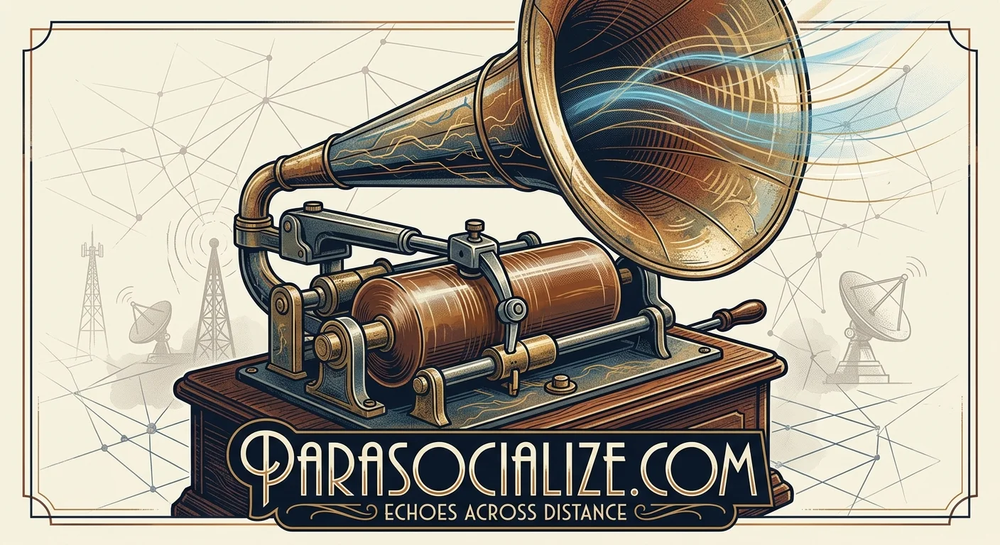
Echoes of distance
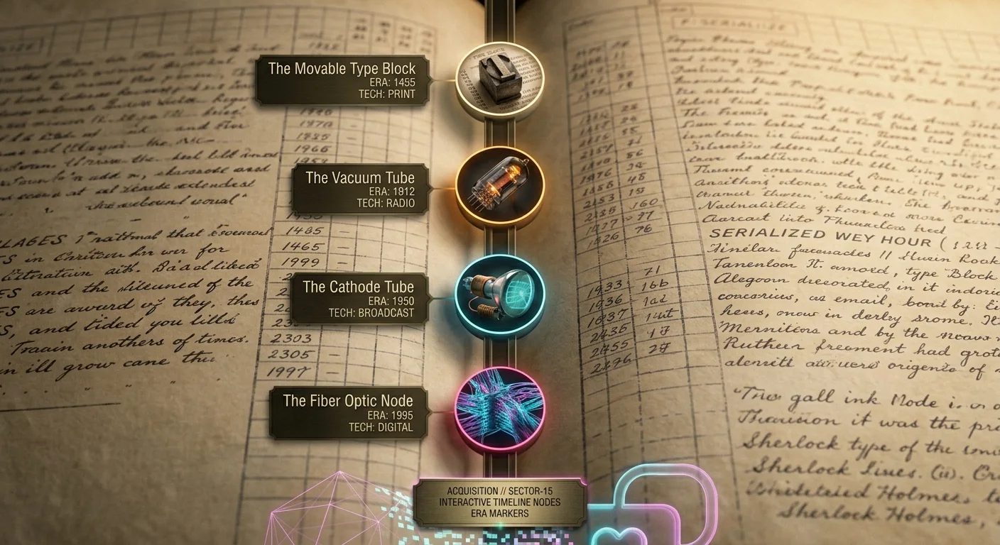
Era markers
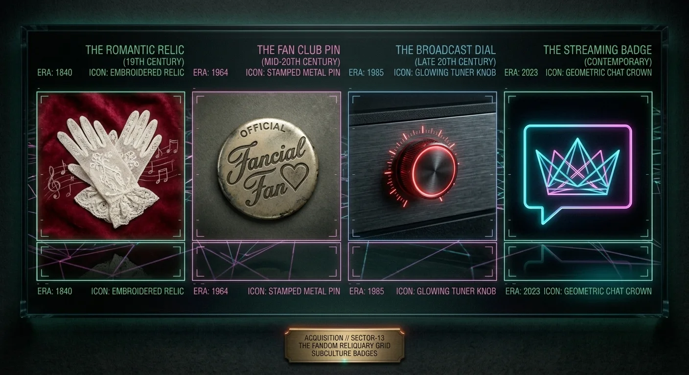
Fandom
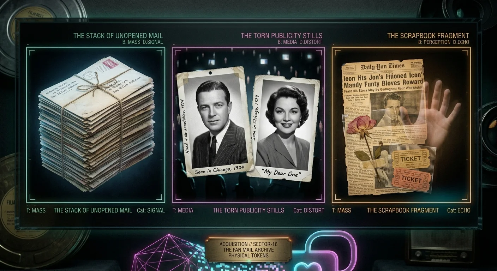
Fan mail
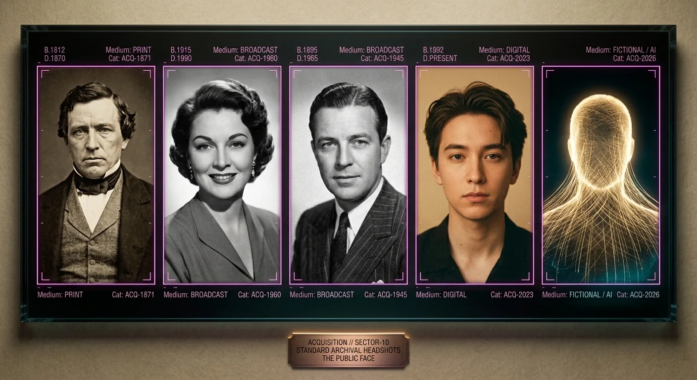
Standard archival headshots
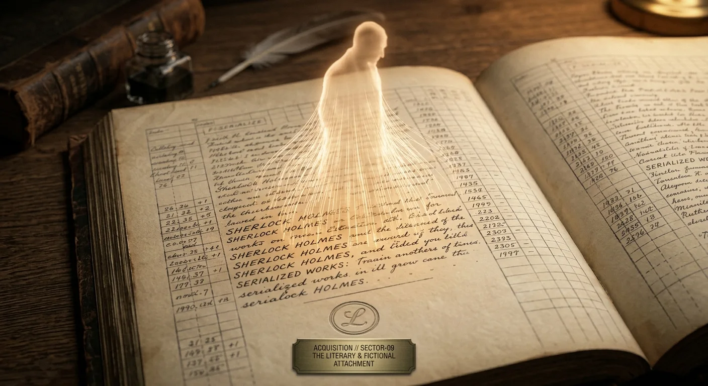
Literary
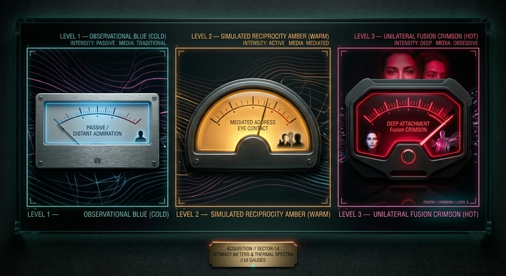
MetersPsychological motifsNarrative

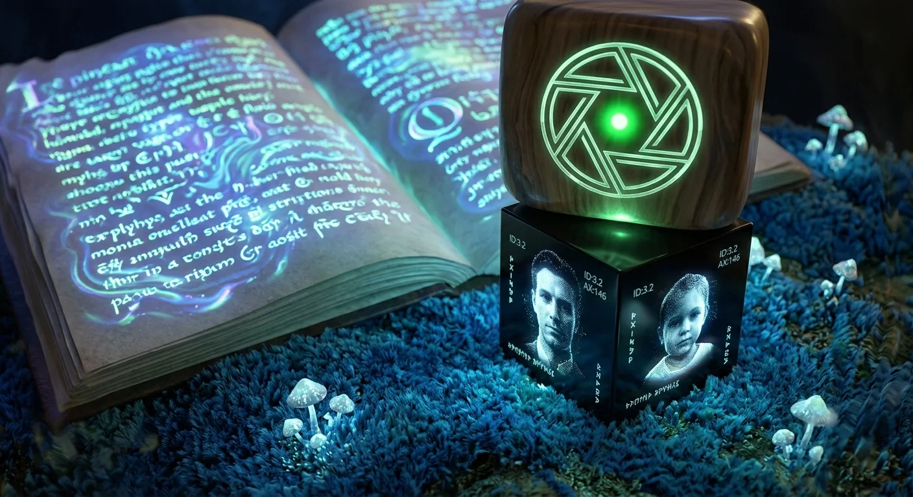
Narrative II
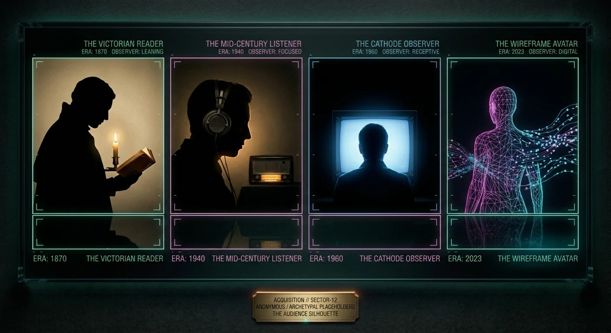
Placeholders
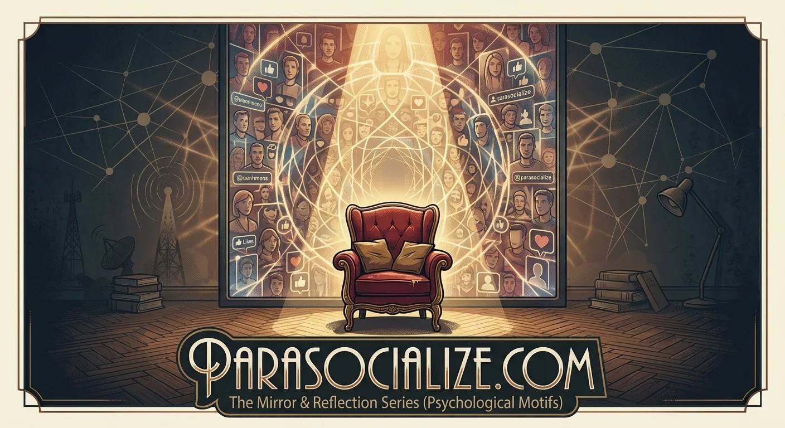
Psychological motifs, II
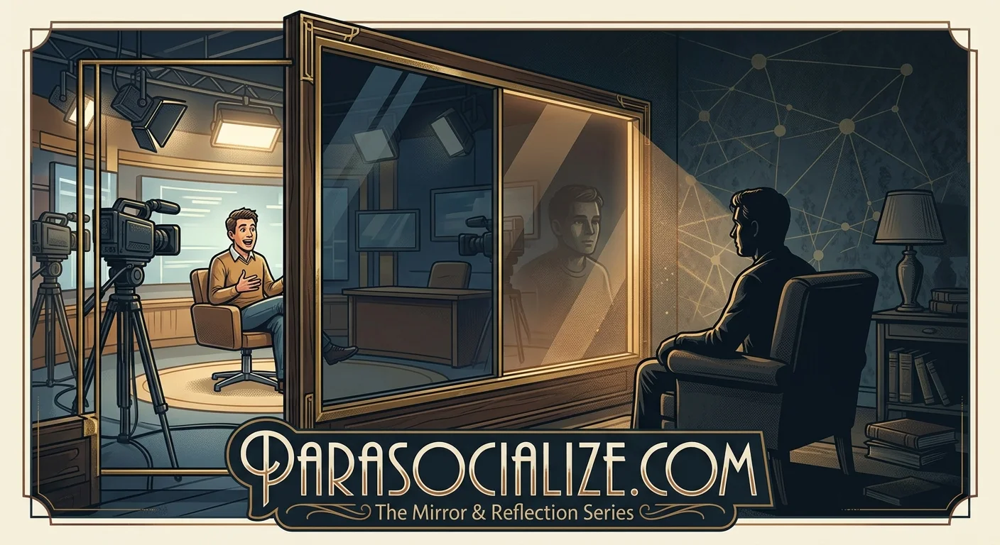
ReflectSilver screen
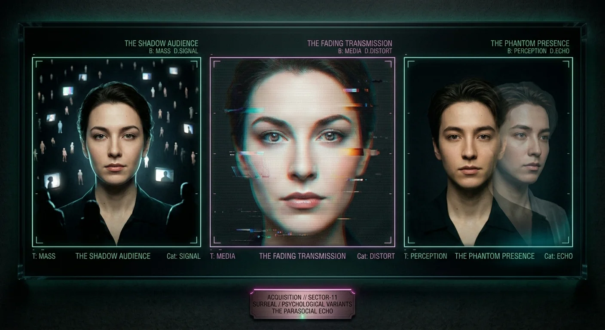
Surreal variantsTech
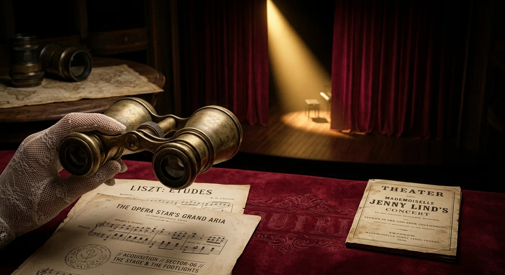
Theater
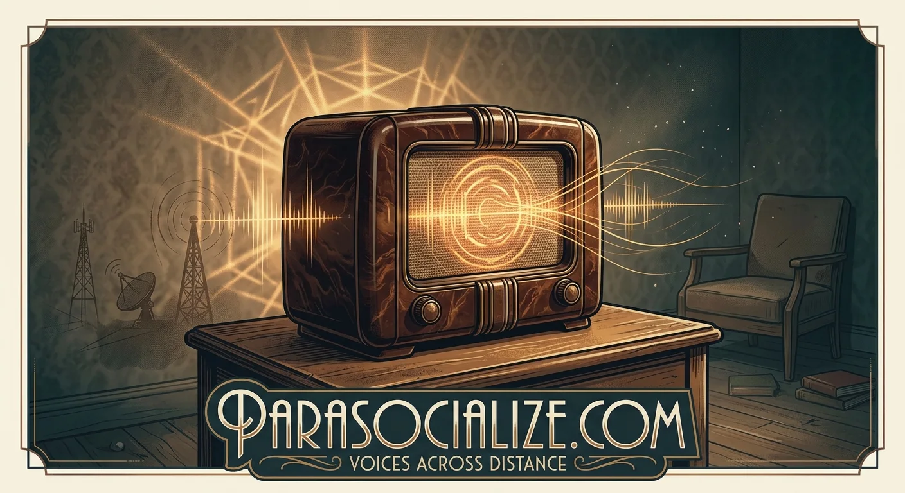
Voices across distance
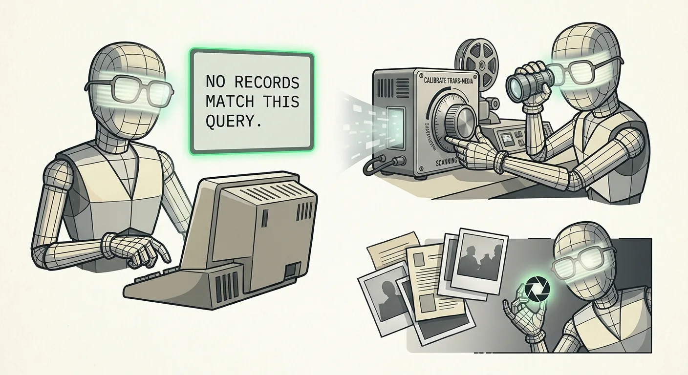
The parasocialite